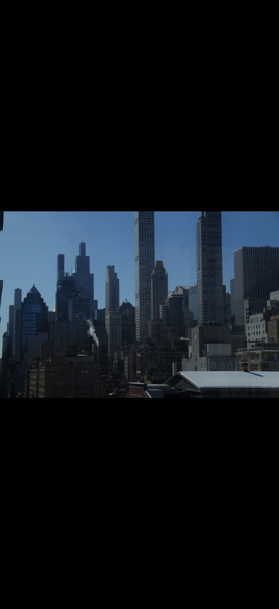

Image A: This image was taken by me and it caught my attention from the moment i seen it.Their unique architecture makes them stand out from the other structures nearby. I was drawn to the way the sunlight hit their surfaces, highlighting the textures and colors. The angles and lines of the buildings looked almost like pieces of modern art. From the outside, the buildings have a presence that makes you stop and really notice them. I wanted to capture the feeling of scale and structure that you don’t always see in daily life. Their design seemed both bold and elegant at the same time. Taking this photo let me preserve a moment where I could appreciate the buildings’ details. It made me look at my college surroundings in a new way. Overall, this picture stood out because it transformed everyday buildings into something visually striking.